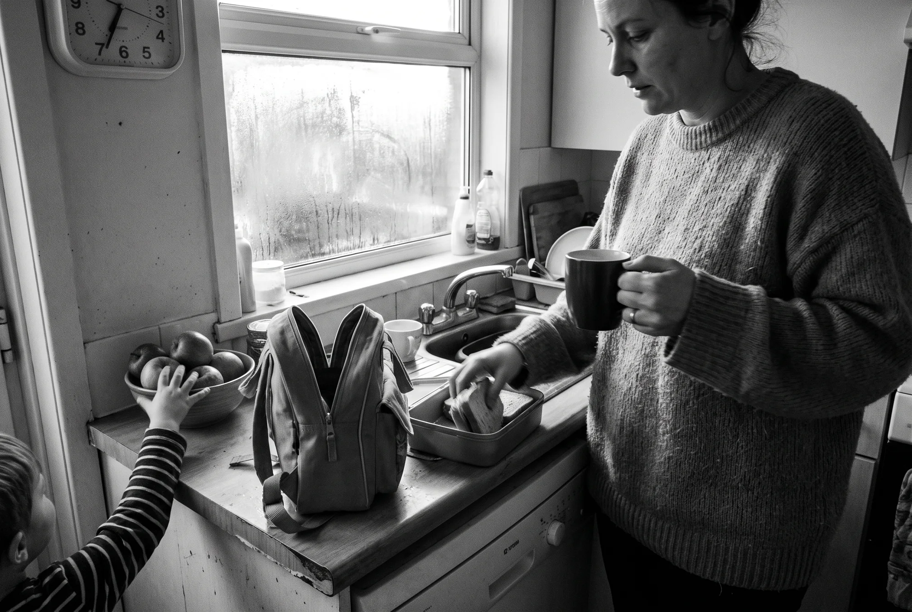
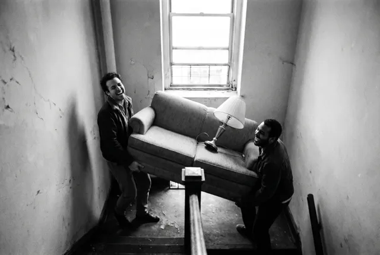

The lunch wasn’t packed, the permission slip was somewhere, and the dentist had emailed twice. We didn’t notice. Nova did, and asked before it did anything about it.


Calendar, inbox, weather and what’s due, folded into one short read for the bus.
Replies drafted in her own voice. Not one of them sent until she said so.
The freight elevator code, mentioned once in March. Still there in May, and erasable any time.
The prescription refill, flagged at the corner by the pharmacy, not at midnight. Booked when he said yes.
Before Nova sends, books, buys or replies, we see it and we decide.
Everything Nova remembers about us sits on one page we can read.
Cross out a line on that page and it’s gone from Nova too.
Join the waitlist and we’ll write when there’s room for you.
Opening [LAUNCH MONTH] · [PRICE] a month